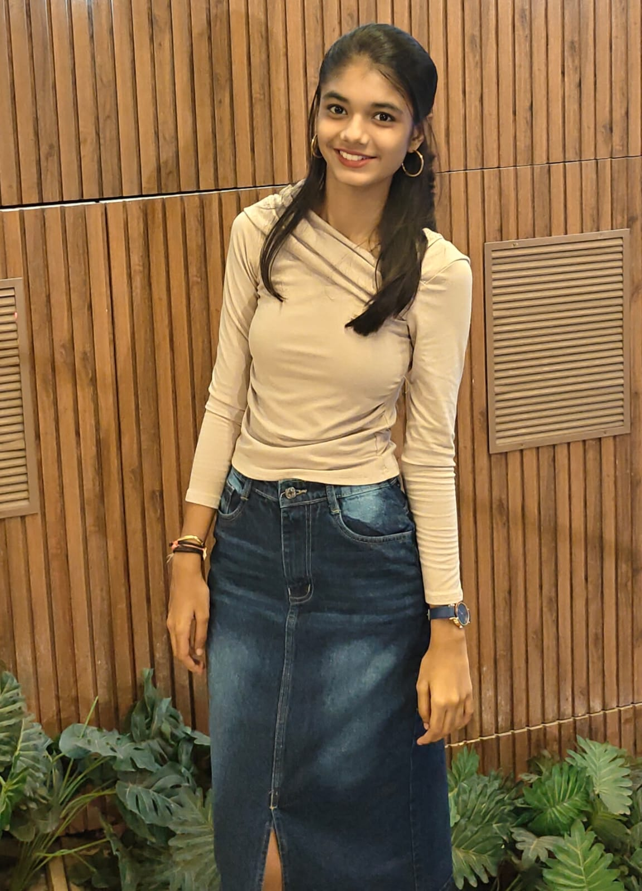

Hi, I'm Palak.
I'm an EXTC undergraduate at VJTI, fascinated by robots, AI, and the idea of machines that can learn. Most of my time goes into exploring reinforcement learning, robotic locomotion, and figuring out how to make things move a little more intelligently. I like building, experimenting, and going down random technical rabbit holes resulting in a robot that falls a few times before it finally walks.

Waddle
Teaching a robot to walk, one failed episode at a time.
Waddle was my exploration into Reinforcement Learning and bipedal locomotion, where I worked on getting an Open Duck robot to walk through experiments in simulation. I started with Q-Learning, DQN and DDQN, and gradually moved into TRPO, PPO and FlashSAC, exploring how different algorithms influence the way an agent learns. Along the way, I learned about rewards, observations, actions, gait generation and training stability — and how even small changes can affect a robot's behaviour. There were plenty of experiments, plenty of falls, and a lot of learning involved in getting the simulated robot to walk.
I'm exploring robot learning beyond traditional reinforcement learning, looking into VL-JEPA and its potential in robotics while experimenting with SO-101 robotic arms using Hugging Face LeRobot. I'm also looking forward to exploring FPGAs and understanding how hardware and intelligent systems come together. Always curious about what's happening beneath the surface — from how models learn to how robots turn perception into action.
Have something
in mind?
Want to talk robotics, exchange ideas, collaborate on something interesting, or just have a conversation? I'm always happy to connect!